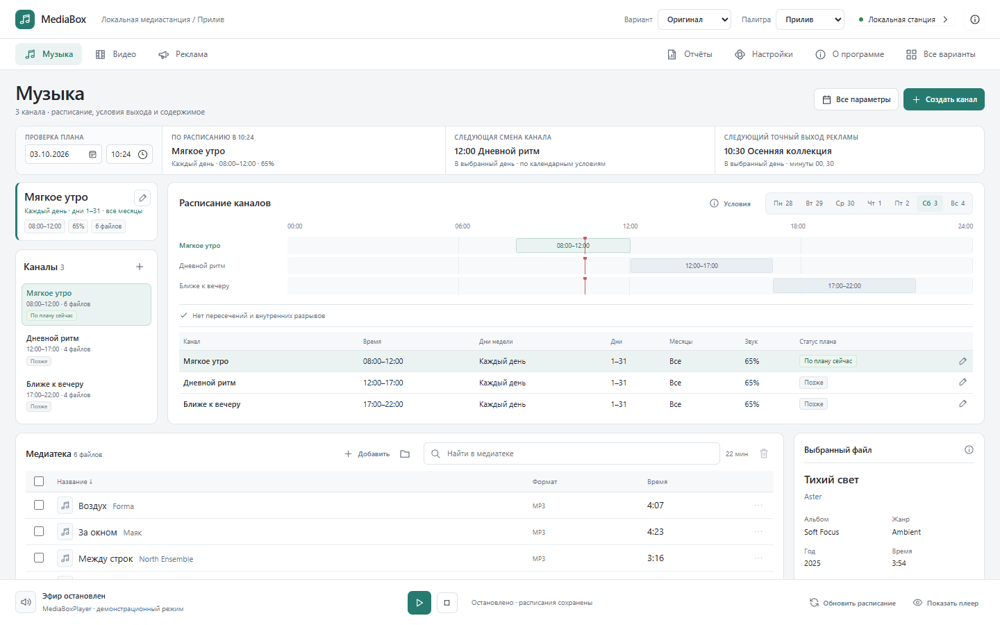
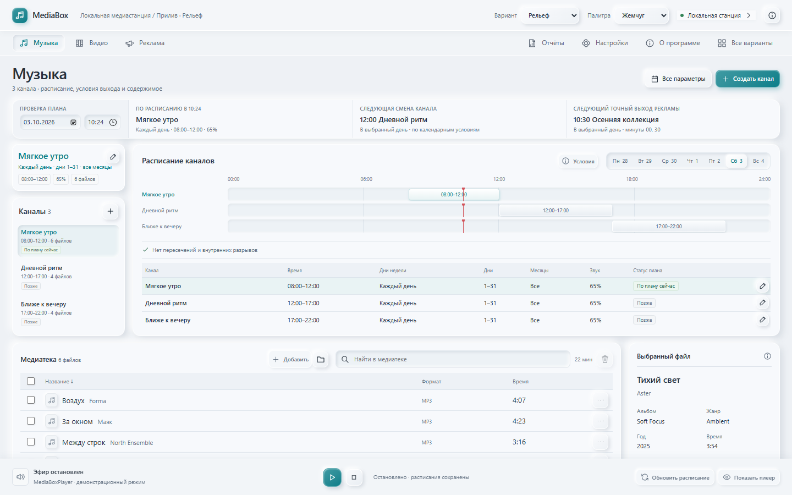
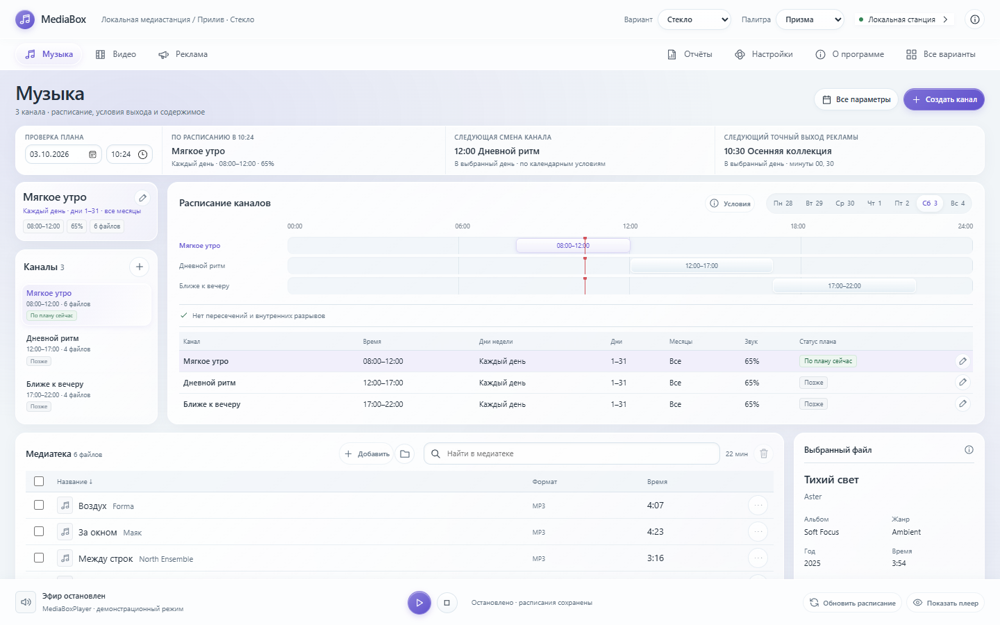
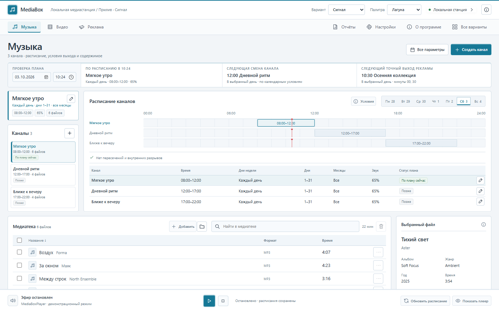
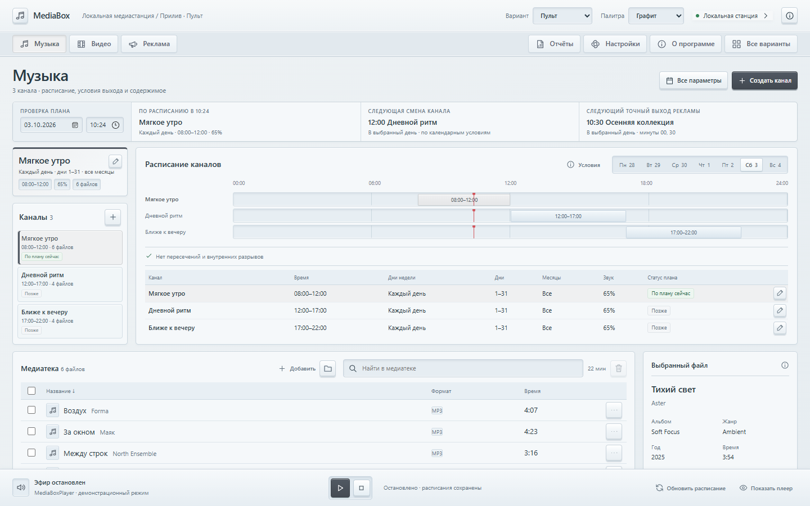
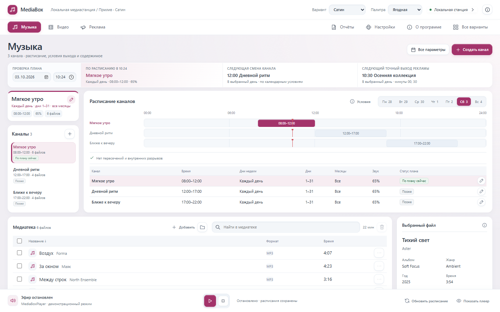

Выбранная композиция · Прилив
Один Прилив.
Шесть вариантов.
Широкое расписание, каналы слева и медиатека внизу. Оригинал и пять новых оформлений по вашим референсам. Светлые материалы, разные контролы и одна знакомая логика работы.

01Прилив
Исходный вариант: широкое расписание, каналы слева и медиатека внизу.
Чистые поверхности
02Прилив · Рельеф
Мягкий объём, выпуклые кнопки и утопленные поля. Тактильная светлая панель.
Светлый неоморфизм
03Прилив · Стекло
Полупрозрачные слои, светлые кромки и капсульные элементы управления.
Матовое стекло
04Прилив · Сигнал
Чёткие рамки, точные шкалы и графичные контролы с цветным акцентом.
Точная графика
05Прилив · Пульт
Светлая приборная панель: клавиши с фаской, углубления и ясные состояния.
Аппаратные контролы
06Прилив · Сатин
Матовые белые модули, мягкие скругления и спокойная цветовая иерархия.
Мягкие модули